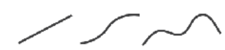
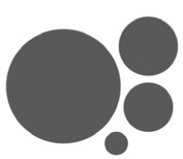
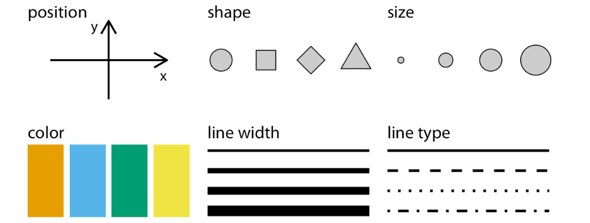
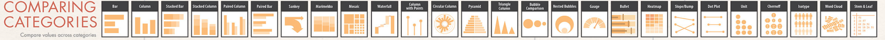
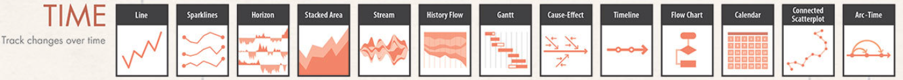
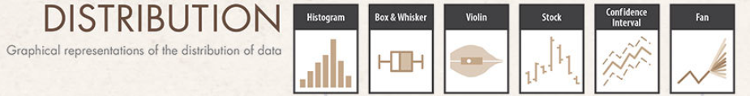
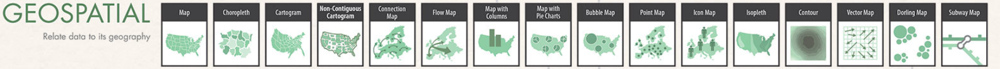
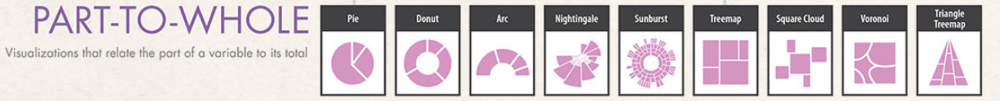
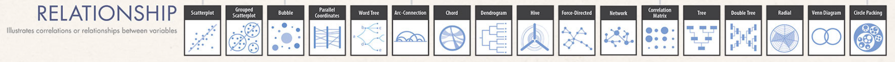

What are the main types of charts, and how do they differ in their use cases?
On my journey in data visualization, I have learned the importance of carefully choosing the right chart. Why is this so important?
Selecting the right chart is not just about aesthetics; it is about effective communication that leads to better decision-making and action. Using the wrong chart can obscure the message and leave the audience confused.
I found that the first thing to consider when preparing a chart is the audience — who they are, what they need to know, and how best to communicate with them. Next, it’s about the data: What type of data do I have, and which type of visual can turn it into a clear, informative visualization? But with so many chart types available, how do I know I am making the right choice?
In this post, I share key resources I use to understand the main categories of chart types. These resources help me select the right chart effectively and serve as a valuable source of inspiration.
Why Does Choosing the Right Chart Matter?
For anyone aiming to communicate data effectively, understanding the main categories of charts is essential - not just for clarity, but also for building credibility as a data visualization specialist. This knowledge helps craft compelling data stories and empowers audiences to interpret insights accurately and confidently.
Visual Encoding
In Data Visualization: A Handbook for Data Driven Design, Andy Kirk writes about “ingredients” and “recipes” for visual representation. The ingredients are the marks and attributes, while the recipes are the chart types. When creating a data visualization, we encode data using these components.
Visual Marks: These are the elements that represent data items. Examples include:
Points Lines  Areas 
Attributes: These are variations in the appearance of marks that represent values associated with data items. Examples include:

Image Source: Fundamentals of Data Visualization by Claus O. Wilke
Combining marks and attributes results in charts, and understanding which chart types are suitable for different data types is essential.
Main Categories of Chart Types
THE GRAPHIC CONTINUUM
The Graphic Continuum by Jonathan Schwabish and Severino Ribecca is an excellent reference for exploring chart types.
Examples of chart types by data category:
Categorical Data: used for representing distinct groups (e.g., services, regions, teams).

Temporal Data: shows trends over time (e.g., forecasts, website traffic, monthly sales).

Distribution Data: visualizes data spread and variability (e.g., age distributions in a survey).

Geospatial Data: maps regional differences (e.g., demographic distributions).

Part-to-Whole Data: illustrates contributions of individual segments to a whole (e.g., market share).

Relationship Data: Examines relationships between variables (e.g., advertising spend vs. product sales).

Chart Types - 3 Valuable Resources
- From Data to Viz: A comprehensive decision tree that helps you choose the right chart type based on your data.
- Directory of visualizations: A chapter from Fundamentals of Data Visualization that provides an overview of common plots and charts.
- FlowingData, especially the Chart Types section: Offers tutorials, guides, and examples for various chart types, serving as a rich source of inspiration.
Summary
This post explores resources that answer the question: What are the main types of charts, and how do they differ in their use cases?
Each chart type serves specific purposes:
Comparison: Comparing data across categories.
Trends Over Time: Showing changes over time.
Distribution: Highlighting data spread and variability.
Part-to-Whole: Illustrating component contributions.
Relationships: Showing correlations between variables.
Geospatial Data: Visualizing geographic-related information.
Choosing the appropriate chart type is essential for clearly telling your data story, which leads to improved understanding and informed decision-making.